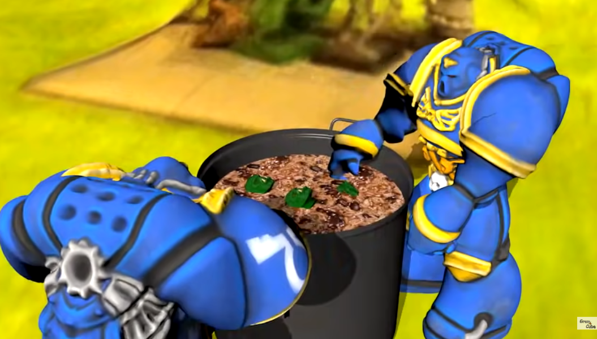

суп

Description
Staple food of the Ultramarines chapter of the Astartes.
Ingredients
- Beef
- Water
- The rest of the ingredients
- Ultramarines chapter (optional)
Steps
- Sear the beef
- Heat the water
- Mix ingredients with the water
- Simmer until ready